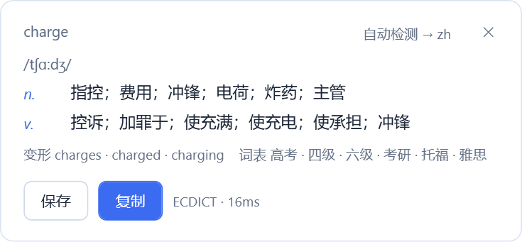
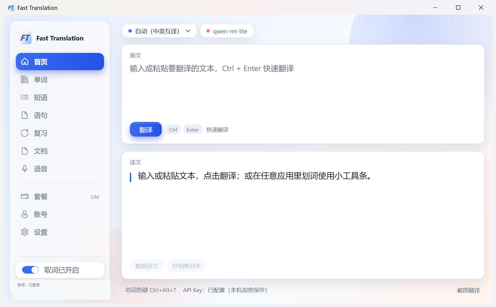

截图翻译Ctrl + Alt + S
选不中的文字，
框起来就好。
图片、扫描件、视频里的文字，框选后一起看译图、原文和译文。识别到的文字还可以编辑。
图片原文
A fresh perspective
changes everything.
换个视角，
一切焕然一新。
适合清晰、疏朗的排版；密集小字与多栏图片可能错位。
选中文字，点一下翻译，在原处继续阅读。
让外语少一点距离，让思路多一点连贯。
阅读随记
There is always something new to discover.
Sometimes, all it takes is a different perspective.
Keep your curiosity close.
A small thought can open a whole new world.
Keep your curiosity close.
常怀好奇之心。
英语阅读
A question is a good place to begin.
Leave a little space for the unexpected.
看见、查到，再慢慢记住。
adj.好奇的；求知欲强的
Make space for good things.
译文为美好的事物，
留一点空间。
选中文字 → 点「翻译」→ 查看译文
交互示意 · 不发送在线翻译请求在你熟悉的工作里，随手用起来
能选中的，随手翻译。选不中的，截个图。
一份文档、一堂网课，也有顺手的打开方式。
图片、扫描件、视频里的文字，框选后一起看译图、原文和译文。识别到的文字还可以编辑。
A fresh perspective
changes everything.
换个视角，
一切焕然一新。
适合清晰、疏朗的排版；密集小字与多栏图片可能错位。
拖入文件，译成新的那一份。保留段落、表格等结构，中途断开也能接着译。
支持 .docx / .txt / .md；局部加粗与超链接等格式可能合并。
电脑播放的会议、网课和视频，变成屏幕上的双语字幕。采集系统声音，不占用麦克风。
需联网识别与翻译，音频经服务端转发。Every new idea begins with a little curiosity.
每一个新想法，都始于一点好奇心。
单个英文单词译成中文时，本地词典直接给出音标、词性和多种释义。没有网络，也能查。
本地查词免费；保存、同步与复习需 Lite 或以上套餐。

这次记得怎么样？
平时藏在托盘，需要时就在身边。
集中翻译、管理单词、调整设置，都在同一个窗口。

注册即可获得免费额度，也可以使用自己的 API Key。
更常用时，再选一份合适的套餐。
先体验，轻量使用
¥0 / 月
10,000 字符 / 月
免费下载日常阅读，积累新词
¥6.9 / 月
880,000 字符 / 月
下载后开通外文常读，字幕常开
¥11.9 / 月
1,880,000 字符 / 月
下载后开通批量文档，长期使用
¥19.9 / 月
3,880,000 字符 / 月
下载后开通套餐在客户端内扫码付款，运营确认到账后开通。额度按所选模型与翻译类型折算，语音按时长折算；具体用量与权益可在客户端查看。配置自有 Key 后，文本翻译额度用尽可自动切换。
不需要。注册账号即可使用免费额度。你也可以在设置中填入自己的阿里云百炼 API Key；Key 经 Windows 本机加密保存，使用自己的 Key 时按对应服务商规则计费。
日常使用推荐安装版，支持应用内检查与安装更新。便携版解压即可运行，不写安装注册信息，升级时需要手动下载新包。两种都已内置 .NET 运行时。
本地词典支持单个英文单词的英译中查询，不消耗在线额度，也不提供例句。句子、短语、截图、文档和语音翻译需要联网，相关文本、图片或音频会发送至翻译或识别服务处理。
支持浏览器、PDF 阅读器、Word 和常见编辑器等场景，实际效果取决于应用是否开放文本选区。替换、插入仅适用于可写位置；校验不通过时会改为复制译文。终端只取词、不写回，密码框不取词。图片中的文字可使用截图翻译。
整份文档翻译目前支持 .docx、.txt、.md，不支持 PDF、Excel 或 PowerPoint 文件。原文件保持不变，译文另存为新文件。Word 的段落、表格等结构会保留，段落内的局部加粗、超链接等格式可能合并。
当前安装包尚未进行代码签名，Windows 可能显示未知发布者提示。请从本页指向的官方 GitHub Releases 下载，并核对项目来源。
Windows 10 1903+ / Windows 11，64 位。
无需管理员权限，无需另装 .NET。